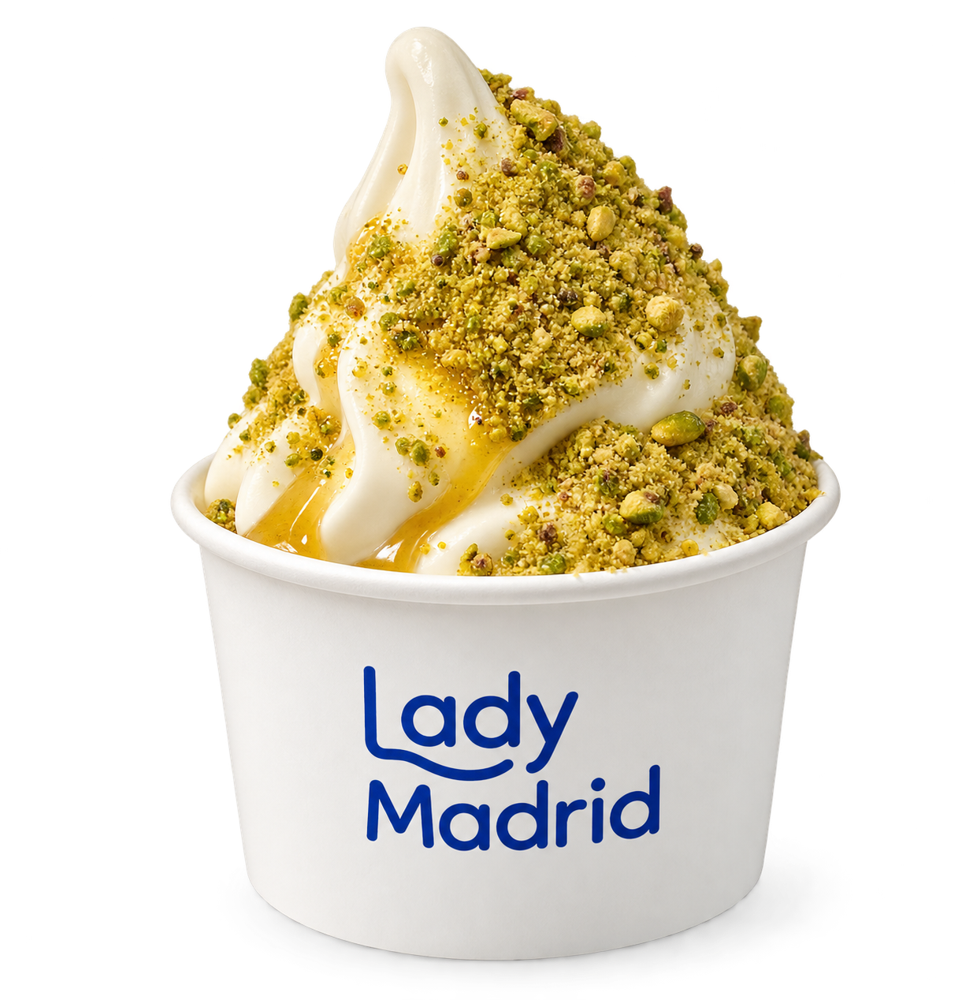
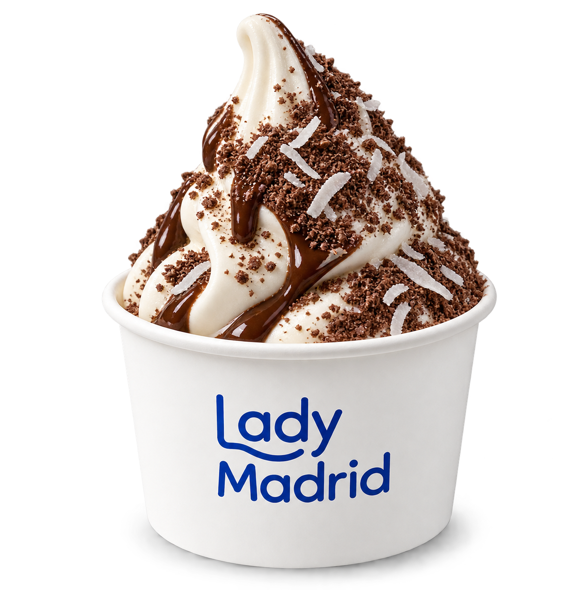
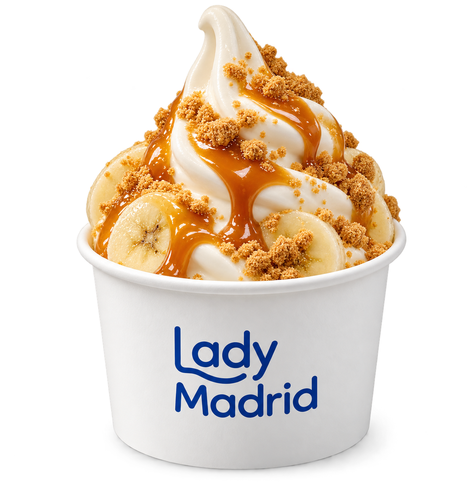
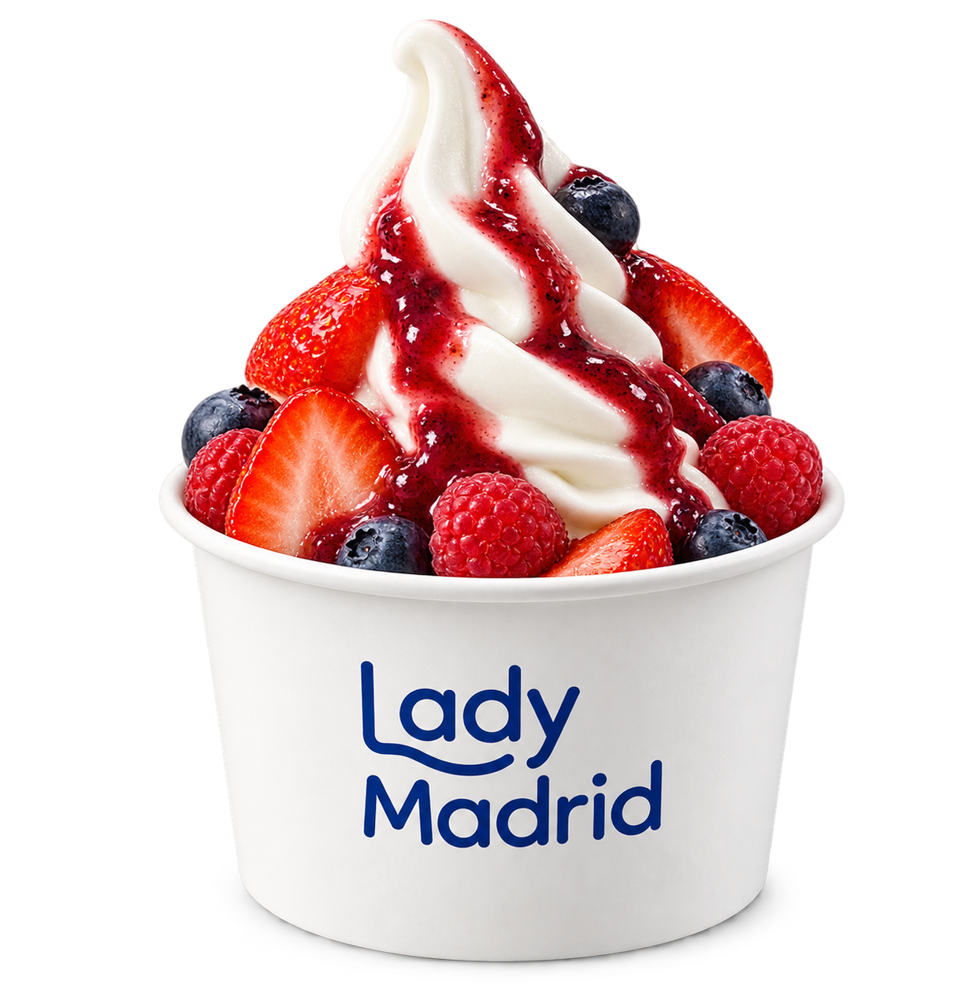
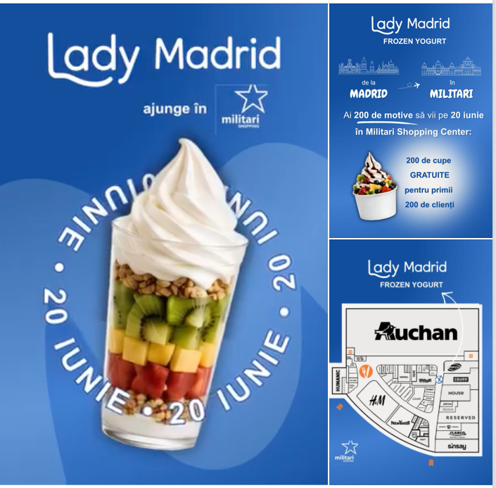
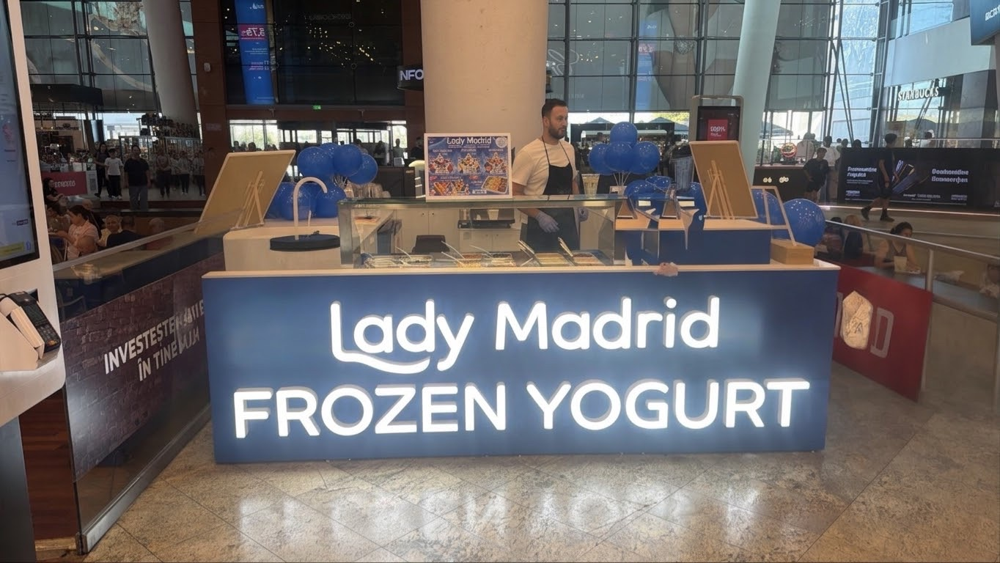

Alege baza
Începe cu frozen yogurtul nostru natural și cremos.
Madrid ajunge în Militari
Iaurt înghețat natural, fructe proaspete și toppingurile tale preferate. Creează-ți combinația și bucură-te de fiecare linguriță.

fistic & miere
ciocolată & cocos
caramel crocant
Lady Madrid aduce un desert simplu, proaspăt și plin de voie bună în București.
Începi cu iaurtul nostru înghețat cremos, apoi alegi fructele, sosurile și toppingurile care îți fac poftă. Un desert care se schimbă de fiecare dată — exact cum îți place.
Hai să ne vizitezi →
Patru pași simpli până la desertul perfect.
Începe cu frozen yogurtul nostru natural și cremos.
Prospețime, culoare și gust în fiecare combinație.
De la crocant la cremos, mixează după pofta ta.
Ia o linguriță și lasă ziua să devină mai bună.

Vino pentru o pauză dulce, un desert după cumpărături sau pur și simplu pentru că ți s-a făcut poftă.
Deschide în Google Maps ↗
Vino pentru o pauză dulce, un desert după cumpărături sau pur și simplu pentru că ți s-a făcut poftă.
Deschide în Google Maps ↗Ai încercat combinația ta preferată?